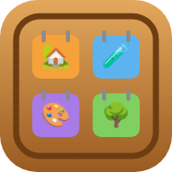

מפת החיים הגדולה
לימוד ביתי לילדים 2–12 ולהורים · 20 נושאים · 1,045 כרטיסיות · עובד בלי אינטרנט
🤖 אנדרואיד
⬇️ הורדת האפליקציה (APK) 2.9MB- לוחצים על הכפתור. אם הדפדפן שואל "לשמור את הקובץ?" — כן.
- פותחים את ההורדה (מהודעת ההורדה למעלה, או באפליקציית "קבצים" → הורדות).
- אם מופיע "חסומה התקנה ממקור לא ידוע": לוחצים הגדרות באותה הודעה, מפעילים אפשר ממקור זה, וחוזרים אחורה.
- לוחצים התקן. זהו — האפליקציה "מפת החיים" במסך הבית.
לא יורד? פתחו את העמוד הזה ב-Chrome (לא מתוך אפליקציה אחרת), ונסו שוב.
🍎 אייפון
באייפון אי אפשר להתקין APK — אבל אפשר להוסיף את האפליקציה למסך הבית וזה עובד בדיוק אותו דבר, גם בלי אינטרנט:
- פותחים את האפליקציה ב-Safari.
- לוחצים על כפתור שיתוף (ריבוע עם חץ למעלה).
- גוללים ובוחרים הוסף למסך הבית → הוסף.
כל הנתונים נשמרים בטלפון בלבד. אין חשבון, אין פרסומות, אין מעקב.